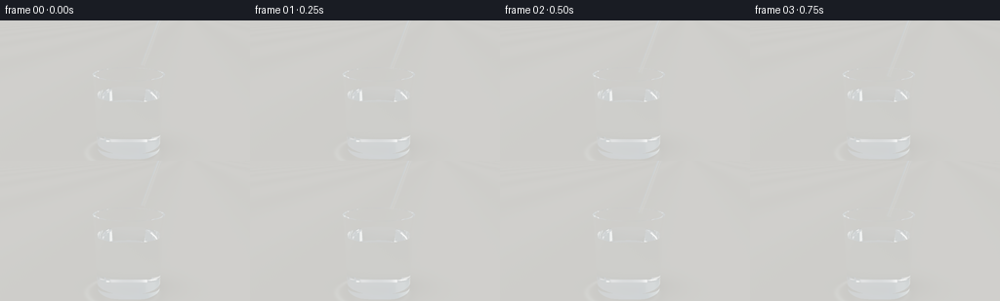
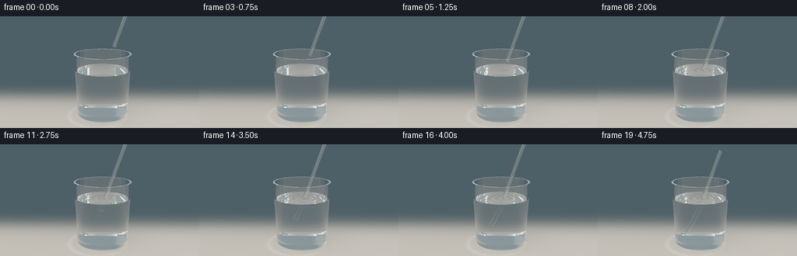
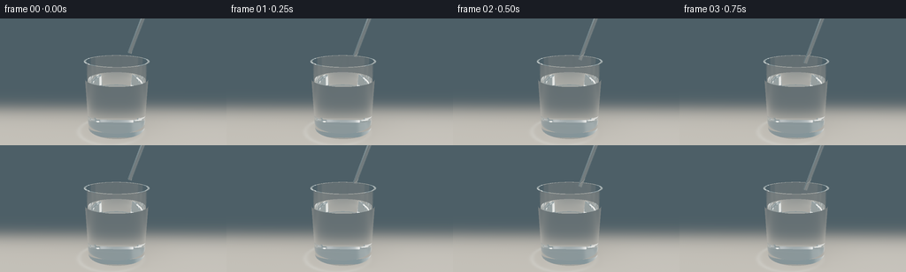
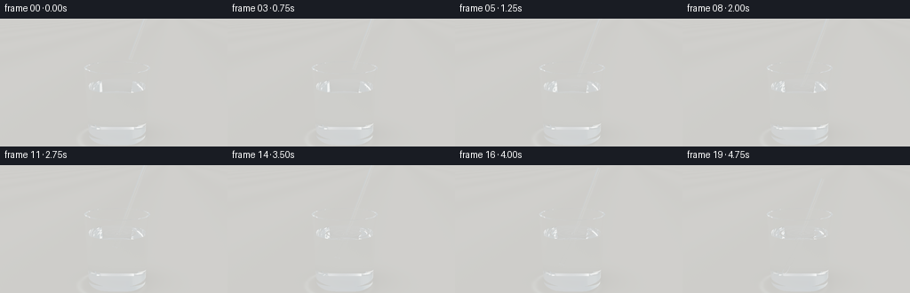

CODING AGENTS AS PIXEL WORLD MODELS
traex/GPT-6.1-Sol · phygen_071
点击播放 · 原生 RGB 像素
逐轮保存的候选
回放视频、检查图与代码变化。
每份候选均可单独播放。实际图片检查记录在下方工具轨迹中。
候选 01播放与检查图
点击播放 · 原生 RGB 像素


展开代码变化
--- 上一保存版本
+++ 本次保存版本
@@ -0,0 +1,272 @@
+"""Deterministic analytic dielectric rendering of a slowly immersed clear straw.
+No external assets or rendering engine; intersections, optics and lighting are numpy.
+"""
+import json, math, time
+from pathlib import Path
+import numpy as np
+from PIL import Image
+import artifact_io
+
+ROOT=Path(__file__).resolve().parent
+SPEC=json.loads((ROOT/'task_spec.json').read_text())
+W,H=SPEC['width'],SPEC['height']
+SS=3
+WW,HH=W*SS,H*SS
+DT=np.float32
+EPS=0.00014
+WATER=1.59
+AX=np.array([.335,.941,.043],dtype=DT); AX/=np.linalg.norm(AX)
+LENGTH=2.91
+RO,RI=.060,.045
+
+
+def norm(a):
+ return a / np.maximum(np.linalg.norm(a,axis=-1,keepdims=True),1e-10)
+
+def outer_rad(y): return .865 + .041*y
+
+def inner_rad(y): return .803 + .041*y
+
+
+def medium(p,tip):
+ x,y,z=p.T
+ r2=x*x+z*z
+ inside=(y>.055)&(y<2.13)&(r2<outer_rad(y)**2)
+ cavity=(y>.205)&(r2<inner_rad(y)**2)
+ glass=inside & ~cavity
+ water=(y>.205)&(y<WATER)&(r2<inner_rad(y)**2)
+ v=p-tip
+ s=v@AX
+ q=v-s[:,None]*AX
+ rr=np.sum(q*q,axis=1)
+ plastic=(s>0)&(s<LENGTH)&(rr<RO*RO)&(rr>RI*RI)
+ idx=np.zeros(len(p),dtype=np.int8)
+ idx[water]=2
+ idx[glass]=1
+ idx[plastic]=3
+ return idx
+
+
+def intersect(o,d,tip,tm):
+ n=len(o)
+ best=np.full(n,1e5,dtype=DT)
+ normal=np.zeros((n,3),dtype=DT)
+ kind=np.zeros(n,dtype=np.int8)
+ def upd(t,nm,valid,k=1):
+ ok=valid&(t>EPS*.6)&(t<best)
+ best[ok]=t[ok]
+ if nm.ndim==1: normal[ok]=nm
+ else: normal[ok]=nm[ok]
+ kind[ok]=k
+ # The glass is a slightly tapered, solid-bottom tumbler. Both interfaces matter.
+ ox,oy,oz=o.T; dx,dy,dz=d.T
+ for base,ymin,ymax in [(.865,.055,2.13),(.803,.205,2.13)]:
+ slope=.041
+ r=base+slope*oy
+ a=dx*dx+dz*dz-(slope*dy)**2
+ b=2*(ox*dx+oz*dz-r*slope*dy)
+ c=ox*ox+oz*oz-r*r
+ disc=b*b-4*a*c
+ rt=np.sqrt(np.maximum(disc,0))
+ for sg in [-1,1]:
+ t=(-b+sg*rt)/(2*a+1e-15)
+ yy=oy+t*dy
+ xx=ox+t*dx; zz=oz+t*dz
+ nm=norm(np.stack([xx,-slope*(base+slope*yy),zz],axis=1))
+ upd(t,nm,(disc>=0)&(yy>=ymin)&(yy<=ymax))
+ # Thick clear base, narrow rim, and a genuinely refracting water surface.
+ for yy,rlo,rhi in [(.055,0,outer_rad(.055)),(.205,0,inner_rad(.205)),(2.13,inner_rad(2.13),outer_rad(2.13))]:
+ t=(yy-oy)/(dy+1e-15)
+ rr=(ox+t*dx)**2+(oz+t*dz)**2
+ upd(t,np.array([0,1,0],dtype=DT),(rr<=rhi*rhi)&(rr>=rlo*rlo))
+ # Small spreading capillary waves are true surface normals, not opaque rings.
+ tx=tip[0]+(WATER-tip[1])*AX[0]/AX[1]
+ tz=tip[2]+(WATER-tip[1])*AX[2]/AX[1]
+ t=(WATER-oy)/(dy+1e-15)
+ xx=ox+t*dx; zz=oz+t*dz
+ rr=xx*xx+zz*zz
+ dist=np.sqrt((xx-tx)**2+(zz-tz)**2+1e-8)
+ wet=np.clip((2.25-tip[1])/1.8,0,1)
+ amp=.0020*wet
+ phase=27*dist-6*tm
+ wave=amp*np.sin(phase)*np.exp(-2.6*dist)
+ # one Newton correction for the tiny surface displacement
+ t=(WATER+wave-oy)/(dy+1e-15)
+ derivative=amp*np.exp(-2.6*dist)*(27*np.cos(phase)-2.6*np.sin(phase))
+ nm=norm(np.stack([-derivative*(xx-tx)/dist,np.ones(n),-derivative*(zz-tz)/dist],axis=1))
+ upd(t,nm,rr<inner_rad(WATER)**2,k=2)
+ # Hollow transparent plastic tube; outer wall, lumen, and annular cut ends.
+ v=o-tip
+ axial=v@AX; dd=d@AX
+ vv=v-axial[:,None]*AX
+ dv=d-dd[:,None]*AX
+ a=np.sum(dv*dv,axis=1)
+ b=2*np.sum(vv*dv,axis=1)
+ for rad in (RO,RI):
+ c=np.sum(vv*vv,axis=1)-rad*rad
+ disc=b*b-4*a*c
+ root=np.sqrt(np.maximum(disc,0))
+ for sg in [-1,1]:
+ t=(-b+sg*root)/(2*a+1e-15)
+ s=axial+t*dd
+ nm=norm(vv+t[:,None]*dv)
+ upd(t,nm,(disc>=0)&(s>=0)&(s<=LENGTH),k=3)
+ for end in (0,LENGTH):
+ t=(end-axial)/(dd+1e-15)
+ v2=vv+t[:,None]*dv
+ rr=np.sum(v2*v2,axis=1)
+ upd(t,AX,(rr>=RI*RI)&(rr<=RO*RO),k=3)
+ # Ground is an opaque matte photographic tabletop.
+ t=-oy/(dy+1e-15)
+ upd(t,np.array([0,1,0],dtype=DT),dy<-1e-7,k=4)
+ return best,normal,kind
+
+
+def backdrop(o,d,reflect=False):
+ # A large diffuse studio, lit by a broad window on the left and a tall right softbox.
+ n=len(o)
+ u=d[:,0]; v=d[:,1]; z=d[:,2]
+ shade=.5+.5*np.tanh(2.8*v+.3)
+ col=np.stack([.69+.15*shade,.72+.14*shade,.725+.15*shade],axis=1)
+ cool=np.exp(-((u+.65)/.50)**2-((v-.04)/.8)**2)
+ col+=cool[:,None]*np.array([-.07,.001,.023])
+ # luminous rectangular shapes with softly rolled edges
+ def panel(direction,up,width,height,strength,tint):
+ nonlocal col
+ a=norm(np.array(direction,dtype=DT)[None])[0]
+ right=norm(np.cross(a,np.array(up,dtype=DT))[None])[0]
+ vert=np.cross(right,a)
+ den=d@a
+ px=(d@right)/(np.maximum(den,.001)); py=(d@vert)/(np.maximum(den,.001))
+ s1=1/(1+np.exp(np.clip((np.abs(px)-width)*35,-40,40)))
+ s2=1/(1+np.exp(np.clip((np.abs(py)-height)*22,-40,40)))
+ light=s1*s2*(den>0)*strength
+ col+=light[:,None]*np.array(tint)
+ panel([-3.8,2.6,3.5],[0,1,0],.17,.72,2.1,[1,.96,.88])
+ panel([3.5,1.4,1.4],[0,1,0],.071,.85,1.65,[.88,.96,1])
+ panel([-.3,5,-1],[0,0,1],.8,.40,.5,[1,1,1])
+ return col.astype(DT)
+
+
+def tabletop(p,d,tm):
+ x,y,z=p.T
+ # pale ivory matte surface, with barely perceptible fine mineral texture
+ fine=.0025*np.sin(85*x+13*z)*np.sin(62*z-11*x)+.0015*np.sin(216*x+74*z)
+ broad=.015*np.sin(.65*x+.12*z)
+ col=np.tile(np.array([.775,.767,.724],dtype=DT),(len(p),1))
+ col+=(fine+broad)[:,None]
+ shadow=np.exp(-((x-.35)/1.18)**2-((z+.18)/.94)**2)
+ contact=np.exp(-(x/.88)**6-(z/.85)**6)
+ col*=1-.115*shadow[:,None]-.075*contact[:,None]
+ # Soft refracted illumination on the tabletop around the weighted glass base.
+ rr=np.sqrt((x+.16)**2+(z-.15)**2)
+ crescent=np.exp(-((rr-.98)/.075)**2)*np.exp(-((x+.6)/1.6)**2)*(.65+.35*np.sin(3*x-2*z)**2)
+ caustic=np.exp(-((x+.43)/.25)**2-((z-.16)/.50)**2)
+ col+=crescent[:,None]*np.array([.105,.118,.113])+caustic[:,None]*.12
+ return col
+
+
+def reflected_light(p,d,tm):
+ col=backdrop(p,d,True)
+ floor=(d[:,1]<-1e-6)
+ t=-p[:,1]/(d[:,1]+1e-15)
+ floor&=(t>0)
+ if np.any(floor):
+ q=p[floor]+t[floor,None]*d[floor]
+ col[floor]=tabletop(q,d[floor],tm)
+ return col
+
+
+def render(frame):
+ tm=frame/SPEC['fps']
+ progress=frame/(SPEC['frames']-1)
+ # Uniform, deliberate motion, gently eased only at the beginning and end.
+ ease=.12*(3*progress**2-2*progress**3)+.88*progress
+ tip_y=2.38-1.98*ease
+ tip=np.array([-.34+(tip_y-.4)*AX[0]/AX[1],tip_y,.055+(tip_y-.4)*AX[2]/AX[1]],dtype=DT)
+ camera=np.array([0,3.65,8.0],dtype=DT)
+ target=np.array([-.1,1.67,0],dtype=DT)
+ forward=norm((target-camera)[None])[0]
+ right=norm(np.cross(forward,[0,1,0])[None])[0]
+ up=np.cross(right,forward)
+ yy,xx=np.mgrid[0:HH,0:WW].astype(DT)
+ f=HH/(2*np.tan(np.deg2rad(25.7)/2))
+ rays=forward+(xx.reshape(-1,1)+.5-WW/2)/f*right-(yy.reshape(-1,1)+.5-HH/2)/f*up
+ rays=norm(rays).astype(DT)
+ count=len(rays)
+ origins=np.tile(camera,(count,1))
+ result=np.zeros((count,3),dtype=DT)
+ throughput=np.ones((count,3),dtype=DT)
+ active=np.arange(count)
+ iors=np.array([1,1.505,1.333,1.465],dtype=DT)
+ absorbs=np.array([[0,0,0],[.016,.006,.003],[.009,.003,.0015],[.012,.004,.001]],dtype=DT)
+ for bounce in range(20):
+ if len(active)==0: break
+ ds,nm,k=intersect(origins,rays,tip,tm)
+ miss=(k==0)
+ if np.any(miss):
+ ids=active[miss]
+ result[ids]+=throughput[ids]*backdrop(origins[miss],rays[miss])
+ hit=~miss
+ if not np.any(hit): break
+ active=active[hit]; origins=origins[hit]; rays=rays[hit]
+ ds=ds[hit]; nm=nm[hit]; k=k[hit]
+ old=medium(origins,tip)
+ throughput[active]*=np.exp(-absorbs[old]*ds[:,None])
+ p=origins+rays*ds[:,None]
+ ground=k==4
+ if np.any(ground):
+ ids=active[ground]
+ result[ids]+=throughput[ids]*tabletop(p[ground],rays[ground],tm)
+ hit=~ground
+ if not np.any(hit): break
+ active=active[hit]; rays=rays[hit]; p=p[hit]; nm=nm[hit]; old=old[hit]; k=k[hit]
+ # A normal opposing incidence is required by the exact dielectric Fresnel law.
+ facing=np.sum(rays*nm,axis=1)>0
+ nm[facing]*=-1
+ new=medium(p+rays*(EPS*2.4),tip)
+ # Water ripple surface slightly departs from the nominal volume classification.
+ waterhit=k==2
+ use=waterhit&(old!=3)
+ new[use & (rays[:,1]<0)]=2
+ new[use & (rays[:,1]>0)]=0
+ eta=iors[old]/iors[new]
+ ci=-np.sum(rays*nm,axis=1)
+ sin2=eta*eta*(1-ci*ci)
+ tir=sin2>1
+ ct=np.sqrt(np.maximum(0,1-sin2))
+ rs=(iors[old]*ci-iors[new]*ct)/(iors[old]*ci+iors[new]*ct+1e-10)
+ rp=(iors[new]*ci-iors[old]*ct)/(iors[new]*ci+iors[old]*ct+1e-10)
+ F=.5*(rs*rs+rp*rp)
+ F[old==new]=0
+ reflected=norm(rays+2*ci[:,None]*nm)
+ F[tir]=0 # total internal reflection follows the reflected path instead
+ result[active]+=throughput[active]*F[:,None]*reflected_light(p+nm*EPS,reflected,tm)
+ throughput[active]*=(1-F[:,None])
+ refracted=norm(eta[:,None]*rays+(eta*ci-ct)[:,None]*nm)
+ refracted[tir]=reflected[tir]
+ rays=refracted
+ origins=p+rays*(EPS*2.4)
+ # negligible contributions are terminated, retaining reflected radiance already gathered
+ retain=np.max(throughput[active],axis=1)>.005
+ active=active[retain]; origins=origins[retain]; rays=rays[retain]
+ if len(active):
+ result[active]+=throughput[active]*reflected_light(origins,rays,tm)
+ # restrained photographic tone mapping; keep clear objects clear, not dark grey
+ result=np.maximum(result,0)
+ result=1-np.exp(-result*1.30)
+ result=np.power(result,1/2.2)
+ img=np.clip(result.reshape(HH,WW,3)*255,0,255).astype(np.uint8)
+ return np.asarray(Image.fromarray(img).resize((W,H),Image.Resampling.LANCZOS))
+
+
+def main():
+ frames=[]
+ start=time.time()
+ for i in range(SPEC['frames']):
+ frames.append(render(i))
+ print(f'frame {i:02d}: {time.time()-start:.1f}s',flush=True)
+ artifact_io.save(np.asarray(frames,dtype=np.uint8),ROOT)
+ print('Saved RGB frames, pixels.npz, index.html and inspection sheets.',flush=True)
+
+if __name__=='__main__': main()
候选 02播放与检查图
点击播放 · 原生 RGB 像素


展开代码变化
--- 上一保存版本
+++ 本次保存版本
@@ -127,9 +127,9 @@
n=len(o)
u=d[:,0]; v=d[:,1]; z=d[:,2]
shade=.5+.5*np.tanh(2.8*v+.3)
- col=np.stack([.69+.15*shade,.72+.14*shade,.725+.15*shade],axis=1)
+ col=np.stack([.095+.11*shade,.142+.13*shade,.16+.135*shade],axis=1)
cool=np.exp(-((u+.65)/.50)**2-((v-.04)/.8)**2)
- col+=cool[:,None]*np.array([-.07,.001,.023])
+ col+=cool[:,None]*np.array([-.016,.012,.024])
# luminous rectangular shapes with softly rolled edges
def panel(direction,up,width,height,strength,tint):
nonlocal col
@@ -153,8 +153,11 @@
# pale ivory matte surface, with barely perceptible fine mineral texture
fine=.0025*np.sin(85*x+13*z)*np.sin(62*z-11*x)+.0015*np.sin(216*x+74*z)
broad=.015*np.sin(.65*x+.12*z)
- col=np.tile(np.array([.775,.767,.724],dtype=DT),(len(p),1))
- col+=(fine+broad)[:,None]
+ near=np.array([.65,.612,.535],dtype=DT)
+ distant=np.array([.058,.094,.113],dtype=DT)
+ sweep=1/(1+np.exp(np.clip(-(z+1.25)*2.2,-40,40)))
+ col=distant[None]+sweep[:,None]*(near-distant)[None]
+ col+=(fine+broad)[:,None]*sweep[:,None]
shadow=np.exp(-((x-.35)/1.18)**2-((z+.18)/.94)**2)
contact=np.exp(-(x/.88)**6-(z/.85)**6)
col*=1-.115*shadow[:,None]-.075*contact[:,None]
@@ -185,7 +188,7 @@
tip_y=2.38-1.98*ease
tip=np.array([-.34+(tip_y-.4)*AX[0]/AX[1],tip_y,.055+(tip_y-.4)*AX[2]/AX[1]],dtype=DT)
camera=np.array([0,3.65,8.0],dtype=DT)
- target=np.array([-.1,1.67,0],dtype=DT)
+ target=np.array([-.1,1.49,0],dtype=DT)
forward=norm((target-camera)[None])[0]
right=norm(np.cross(forward,[0,1,0])[None])[0]
up=np.cross(right,forward)
可观测工具轨迹
实际执行的命令与返回图片。
命令 1exit 0
/bin/bash -lc "ls -la && cat prompt.txt && printf '\\n--- RULES ---\\n' && cat GENERATION_RULES.md && printf '\\n--- SPEC ---\\n' && cat task_spec.json"
命令 2exit 0
/bin/bash -lc "cat artifact_io.py && python - <<'PY' import importlib.util for s in ['numpy','PIL','scipy']: print(s, bool(importlib.util.find_spec(s))) PY"
命令 3exit 0
/bin/bash -lc "cat > generate.py <<'PY'
\"\"\"Deterministic analytic dielectric rendering of a slowly immersed clear straw.
No external assets or rendering engine; intersections, optics and lighting are numpy.
\"\"\"
import json, math, time
from pathlib import Path
import numpy as np
from PIL import Image
import artifact_io
ROOT=Path(__file__).resolve().parent
SPEC=json.loads((ROOT/'task_spec.json').read_text())
W,H=SPEC['width'],SPEC['height']
SS=3
WW,HH=W*SS,H*SS
DT=np.float32
EPS=0.00014
WATER=1.59
AX=np.array([.335,.941,.043],dtype=DT); AX/=np.linalg.norm(AX)
LENGTH=2.91
RO,RI=.060,.045
def norm(a):
return a / np.maximum(np.linalg.norm(a,axis=-1,keepdims=True),1e-10)
def outer_rad(y): return .865 + .041*y
def inner_rad(y): return .803 + .041*y
def medium(p,tip):
x,y,z=p.T
r2=x*x+z*z
inside=(y>.055)&(y<2.13)&(r2<outer_rad(y)**2)
cavity=(y>.205)&(r2<inner_rad(y)**2)
glass=inside & ~cavity
water=(y>.205)&(y<WATER)&(r2<inner_rad(y)**2)
v=p-tip
s=v@AX
q=v-s[:,None]*AX
rr=np.sum(q*q,axis=1)
plastic=(s>0)&(s<LENGTH)&(rr<RO*RO)&(rr>RI*RI)
idx=np.zeros(len(p),dtype=np.int8)
idx[water]=2
idx[glass]=1
idx[plastic]=3
return idx
def intersect(o,d,tip,tm):
n=len(o)
best=np.full(n,1e5,dtype=DT)
normal=np.zeros((n,3),dtype=DT)
kind=np.zeros(n,dtype=np.int8)
def upd(t,nm,valid,k=1):
ok=valid&(t>EPS*.6)&(t<best)
best[ok]=t[ok]
if nm.ndim==1: normal[ok]=nm
else: normal[ok]=nm[ok]
kind[ok]=k
# The glass is a slightly tapered, solid-bottom tumbler. Both interfaces matter.
ox,oy,oz=o.T; dx,dy,dz=d.T
for base,ymin,ymax in [(.865,.055,2.13),(.803,.205,2.13)]:
slope=.041
r=base+slope*oy
a=dx*dx+dz*dz-(slope*dy)**2
b=2*(ox*dx+oz*dz-r*slope*dy)
c=ox*ox+oz*oz-r*r
disc=b*b-4*a*c
rt=np.sqrt(np.maximum(disc,0))
for sg in [-1,1]:
t=(-b+sg*rt)/(2*a+1e-15)
yy=oy+t*dy
xx=ox+t*dx; zz=oz+t*dz
nm=norm(np.stack([xx,-slope*(base+slope*yy),zz],axis=1))
upd(t,nm,(disc>=0)&(yy>=ymin)&(yy<=ymax))
# Thick clear base, narrow rim, and a genuinely refracting water surface.
for yy,rlo,rhi in [(.055,0,outer_rad(.055)),(.205,0,inner_rad(.205)),(2.13,inner_rad(2.13),outer_rad(2.13))]:
t=(yy-oy)/(dy+1e-15)
rr=(ox+t*dx)**2+(oz+t*dz)**2
upd(t,np.array([0,1,0],dtype=DT),(rr<=rhi*rhi)&(rr>=rlo*rlo))
# Small spreading capillary waves are true surface normals, not opaque rings.
tx=tip[0]+(WATER-tip[1])*AX[0]/AX[1]
tz=tip[2]+(WATER-tip[1])*AX[2]/AX[1]
t=(WATER-oy)/(dy+1e-15)
xx=ox+t*dx; zz=oz+t*dz
rr=xx*xx+zz*zz
dist=np.sqrt((xx-tx)**2+(zz-tz)**2+1e-8)
wet=np.clip((2.25-tip[1])/1.8,0,1)
amp=.0020*wet
phase=27*dist-6*tm
wave=amp*np.sin(phase)*np.exp(-2.6*dist)
# one Newton correction for the tiny surface displacement
t=(WATER+wave-oy)/(dy+1e-15)
derivative=amp*np.exp(-2.6*dist)*(27*np.cos(phase)-2.6*np.sin(phase))
nm=norm(np.stack([-derivative*(xx-tx)/dist,np.ones(n),-derivative*(zz-tz)/dist],axis=1))
upd(t,nm,rr<inner_rad(WATER)**2,k=2)
# Hollow transparent plastic tube; outer wall, lumen, and annular cut ends.
v=o-tip
axial=v@AX; dd=d@AX
vv=v-axial[:,None]*AX
dv=d-dd[:,None]*AX
a=np.sum(dv*dv,axis=1)
b=2*np.sum(vv*dv,axis=1)
for rad in (RO,RI):
c=np.sum(vv*vv,axis=1)-rad*rad
disc=b*b-4*a*c
root=np.sqrt(np.maximum(disc,0))
for sg in [-1,1]:
t=(-b+sg*root)/(2*a+1e-15)
s=axial+t*dd
nm=norm(vv+t[:,None]*dv)
upd(t,nm,(disc>=0)&(s>=0)&(s<=LENGTH),k=3)
for end in (0,LENGTH):
t=(end-axial)/(dd+1e-15)
v2=vv+t[:,None]*dv
rr=np.sum(v2*v2,axis=1)
upd(t,AX,(rr>=RI*RI)&(rr<=RO*RO),k=3)
# Ground is an opaque matte photographic tabletop.
t=-oy/(dy+1e-15)
upd(t,np.array([0,1,0],dtype=DT),dy<-1e-7,k=4)
return best,normal,kind
def backdrop(o,d,reflect=False):
# A large diffuse studio, lit by a broad window on the left and a tall right softbox.
n=len(o)
u=d[:,0]; v=d[:,1]; z=d[:,2]
shade=.5+.5*np.tanh(2.8*v+.3)
col=np.stack([.69+.15*shade,.72+.14*shade,.725+.15*shade],axis=1)
cool=np.exp(-((u+.65)/.50)**2-((v-.04)/.8)**2)
col+=cool[:,None]*np.array([-.07,.001,.023])
# luminous rectangular shapes with softly rolled edges
def panel(direction,up,width,height,strength,tint):
nonlocal col
a=norm(np.array(direction,dtype=DT)[None])[0]
right=norm(np.cross(a,np.array(up,dtype=DT))[None])[0]
vert=np.cross(right,a)
den=d@a
px=(d@right)/(np.maximum(den,.001)); py=(d@vert)/(np.maximum(den,.001))
s1=1/(1+np.exp(np.clip((np.abs(px)-width)*35,-40,40)))
s2=1/(1+np.exp(np.clip((np.abs(py)-height)*22,-40,40)))
light=s1*s2*(den>0)*strength
col+=light[:,None]*np.array(tint)
panel([-3.8,2.6,3.5],[0,1,0],.17,.72,2.1,[1,.96,.88])
panel([3.5,1.4,1.4],[0,1,0],.071,.85,1.65,[.88,.96,1])
panel([-.3,5,-1],[0,0,1],.8,.40,.5,[1,1,1])
return col.astype(DT)
def tabletop(p,d,tm):
x,y,z=p.T
# pale ivory matte surface, with barely perceptible fine mineral texture
fine=.0025*np.sin(85*x+13*z)*np.sin(62*z-11*x)+.0015*np.sin(216*x+74*z)
broad=.015*np.sin(.65*x+.12*z)
col=np.tile(np.array([.775,.767,.724],dtype=DT),(len(p),1))
col+=(fine+broad)[:,None]
shadow=np.exp(-((x-.35)/1.18)**2-((z+.18)/.94)**2)
contact=np.exp(-(x/.88)**6-(z/.85)**6)
col*=1-.115*shadow[:,None]-.075*contact[:,None]
# Soft refracted illumination on the tabletop around the weighted glass base.
rr=np.sqrt((x+.16)**2+(z-.15)**2)
crescent=np.exp(-((rr-.98)/.075)**2)*np.exp(-((x+.6)/1.6)**2)*(.65+.35*np.sin(3*x-2*z)**2)
caustic=np.exp(-((x+.43)/.25)**2-((z-.16)/.50)**2)
col+=crescent[:,None]*np.array([.105,.118,.113])+caustic[:,None]*.12
return col
def reflected_light(p,d,tm):
col=backdrop(p,d,True)
floor=(d[:,1]<-1e-6)
t=-p[:,1]/(d[:,1]+1e-15)
floor&=(t>0)
if np.any(floor):
q=p[floor]+t[floor,None]*d[floor]
col[floor]=tabletop(q,d[floor],tm)
return col
def render(frame):
tm=frame/SPEC['fps']
progress=frame/(SPEC['frames']-1)
# Uniform, deliberate motion, gently eased only at the beginning and end.
ease=.12*(3*progress**2-2*progress**3)+.88*progress
tip_y=2.38-1.98*ease
tip=np.array([-.34+(tip_y-.4)*AX[0]/AX[1],tip_y,.055+(tip_y-.4)*AX[2]/AX[1]],dtype=DT)
camera=np.array([0,3.65,8.0],dtype=DT)
target=np.array([-.1,1.67,0],dtype=DT)
forward=norm((target-camera)[None])[0]
right=norm(np.cross(forward,[0,1,0])[None])[0]
up=np.cross(right,forward)
yy,xx=np.mgrid[0:HH,0:WW].astype(DT)
f=HH/(2*np.tan(np.deg2rad(25.7)/2))
rays=forward+(xx.reshape(-1,1)+.5-WW/2)/f*right-(yy.reshape(-1,1)+.5-HH/2)/f*up
rays=norm(rays).astype(DT)
count=len(rays)
origins=np.tile(camera,(count,1))
result=np.zeros((count,3),dtype=DT)
throughput=np.ones((count,3),dtype=DT)
active=np.arange(count)
iors=np.array([1,1.505,1.333,1.465],dtype=DT)
absorbs=np.array([[0,0,0],[.016,.006,.003],[.009,.003,.0015],[.012,.004,.001]],dtype=DT)
for bounce in range(20):
if len(active)==0: break
ds,nm,k=intersect(origins,rays,tip,tm)
miss=(k==0)
if np.any(miss):
ids=active[miss]
result[ids]+=throughput[ids]*backdrop(origins[miss],rays[miss])
hit=~miss
if not np.any(hit): break
active=active[hit]; origins=origins[hit]; rays=rays[hit]
ds=ds[hit]; nm=nm[hit]; k=k[hit]
old=medium(origins,tip)
throughput[active]*=np.exp(-absorbs[old]*ds[:,None])
p=origins+rays*ds[:,None]
ground=k==4
if np.any(ground):
ids=active[ground]
result[ids]+=throughput[ids]*tabletop(p[ground],rays[ground],tm)
hit=~ground
if not np.any(hit): break
active=active[hit]; rays=rays[hit]; p=p[hit]; nm=nm[hit]; old=old[hit]; k=k[hit]
# A normal opposing incidence is required by the exact dielectric Fresnel law.
facing=np.sum(rays*nm,axis=1)>0
nm[facing]*=-1
new=medium(p+rays*(EPS*2.4),tip)
# Water ripple surface slightly departs from the nominal volume classification.
waterhit=k==2
use=waterhit&(old"'!=3)
new[use & (rays[:,1]<0)]=2
new[use & (rays[:,1]>0)]=0
eta=iors[old]/iors[new]
ci=-np.sum(rays*nm,axis=1)
sin2=eta*eta*(1-ci*ci)
tir=sin2>1
ct=np.sqrt(np.maximum(0,1-sin2))
rs=(iors[old]*ci-iors[new]*ct)/(iors[old]*ci+iors[new]*ct+1e-10)
rp=(iors[new]*ci-iors[old]*ct)/(iors[new]*ci+iors[old]*ct+1e-10)
F=.5*(rs*rs+rp*rp)
F[old==new]=0
reflected=norm(rays+2*ci[:,None]*nm)
F[tir]=0 # total internal reflection follows the reflected path instead
result[active]+=throughput[active]*F[:,None]*reflected_light(p+nm*EPS,reflected,tm)
throughput[active]*=(1-F[:,None])
refracted=norm(eta[:,None]*rays+(eta*ci-ct)[:,None]*nm)
refracted[tir]=reflected[tir]
rays=refracted
origins=p+rays*(EPS*2.4)
# negligible contributions are terminated, retaining reflected radiance already gathered
retain=np.max(throughput[active],axis=1)>.005
active=active[retain]; origins=origins[retain]; rays=rays[retain]
if len(active):
result[active]+=throughput[active]*reflected_light(origins,rays,tm)
# restrained photographic tone mapping; keep clear objects clear, not dark grey
result=np.maximum(result,0)
result=1-np.exp(-result*1.30)
result=np.power(result,1/2.2)
img=np.clip(result.reshape(HH,WW,3)*255,0,255).astype(np.uint8)
return np.asarray(Image.fromarray(img).resize((W,H),Image.Resampling.LANCZOS))
def main():
frames=[]
start=time.time()
for i in range(SPEC['"'frames']):
frames.append(render(i))
print(f'frame {i:02d}: {time.time()-start:.1f}s',flush=True)
artifact_io.save(np.asarray(frames,dtype=np.uint8),ROOT)
print('Saved RGB frames, pixels.npz, index.html and inspection sheets.',flush=True)
if __name__=='__main__': main()
PY
OPENBLAS_NUM_THREADS=1 OMP_NUM_THREADS=1 python generate.py"命令 4exit 0
/bin/bash -lc "python - <<'PY' p='generate.py' s=open(p).read().replace(\"[-.1,1.67,0]\",\"[-.1,1.49,0]\") s=s.replace(\"col=np.stack([.69+.15*shade,.72+.14*shade,.725+.15*shade],axis=1)\",\"col=np.stack([.095+.11*shade,.142+.13*shade,.16+.135*shade],axis=1)\") s=s.replace(\"[-.07,.001,.023]\",\"[-.016,.012,.024]\") s=s.replace(\"col=np.tile(np.array([.775,.767,.724],dtype=DT),(len(p),1))\\n col+=(fine+broad)[:,None]\", \"near=np.array([.65,.612,.535],dtype=DT)\\n distant=np.array([.058,.094,.113],dtype=DT)\\n sweep=1/(1+np.exp(np.clip(-(z+1.25)*2.2,-40,40)))\\n col=distant[None]+sweep[:,None]*(near-distant)[None]\\n col+=(fine+broad)[:,None]*sweep[:,None]\") open(p,'w').write(s) PY OPENBLAS_NUM_THREADS=1 OMP_NUM_THREADS=1 python generate.py"
命令 5exit 0
/bin/bash -lc "command -v ffmpeg || true; python - <<'PY'
import numpy as np,json
from pathlib import Path
p=Path('.')
a=np.load(p/'pixels.npz')['pixels']
print('Packed RGB video:',a.shape,a.dtype)
print('Frame count:',len(list((p/'frames').glob('*.png'))))
print('Playback page exists:',(p/'index.html').is_file())
PY"视觉工具实际返回图片 1

视觉工具实际返回图片 2

保存候选 2 份；完成命令 5 次；可验证图片返回 2 张。原始 API 响应与完整日志保留在本地。